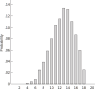

19 Point Estimation
One of the great questions in statistical inference is: How big is it? This can mean — How long? How deep? How much time? At what angle?
This question about size may pertain to a single object, of which there are many measurements; an example is the location of a star in the heavens. Or the question may pertain to a varied set of elements and their measurements; examples include the effect of treatment with a given drug, and the incomes of the people of the United States in 1994.
From where the observer stands, having only the evidence of a sample in hand, it often is impossible to determine whether the data represent multiple observations of a single object, or single (or multiple) observations of multiple objects. For example, from crude measurements of weight you could not know whether one person is being weighed repeatedly, or several people have been weighed once. Hence all the following discussion of point estimation is the same for both of these situations.
The word “big” in the first sentence above is purposely vague, because there are many possible kinds of estimates that one might wish to make concerning a given object or collection. For a single object like a star, one surely will wish to make a best guess about its location. But about the effects of a drug treatment, or the incomes of a nation, there are many questions that one may wish to answer. The average effect or income is a frequent and important object of our interest. But one may also wish to know about the amount of dispersion in the distribution of treatment effects, or of incomes, or the symmetry of the distribution. And there are still other questions one may wish to answer.
Even if we focus on the average, the issue often is less clear cut than we may think at first. If we are to choose a single number to characterize the population (universe) from which a given set of data has been drawn, what should that representative number be for the case at hand? The answer must depend on the purpose with which we ask the question, of course. There are several main possibilities such as the mean, the median, and the mode.
Even if we confine our attention to the mean as our measure of the central tendency of a distribution, there are various ways of estimating it, each of them having a different rationale. The various methods of estimation often lead to the same estimate, especially if the distribution is symmetric (such as the distribution of errors you make in throwing darts at a dart board). But in an asymmetric case such as a distribution of incomes, the results may differ among the contending modes of estimation. So the entire topic is more messy than appears at first look. Though we will not inquire into the complexities, it is important that you understand that the matter is not as simple as it may seem. (See Savage (1972), Chapter 15, for more discussion of this topic.)
19.1 Ways to estimate the mean
19.1.1 The Method of Moments
Since elementary school you have been taught to estimate the mean of a universe (or calculate the mean of a sample) by taking a simple arithmetic average. A fancy name for that process is “the method of moments.” It is the equivalent of estimating the center of gravity of a pole by finding the place where it will balance on your finger. If the pole has the same size and density all along its length, that balance point will be halfway between the endpoints, and the point may be thought of as the arithmetic average of the distances from the balance point of all the one-centimeter segments of the pole.
Consider this example:
Example: Twenty-nine Out of Fifty People Polled Say They Will Vote For The Democrat. Who Will Win The Election? The Relationship Between The Sample Proportion and The Population Proportion in a Two-Outcome Universe.
You take a random sample of 50 people in Maryland and ask which party’s candidate for governor they will vote for. Twenty-nine say they will vote for the Democrat. Let’s say it is reasonable to assume in this case that people will vote exactly as they say they will. The statistical question then facing you is: What proportion of the voters in Maryland will vote for the Democrat in the general election?
Your intuitive best guess is that the proportion of the “universe” — which is composed of voters in the general election, in this case — will be the same as the proportion of the sample. That is, 58 percent = 29/50 is likely to be your guess about the proportion that will vote Democratic. Of course, your estimate may be too high or too low in this particular case, but in the long run — that is, if you take many samples like this one — on the average the sample mean will equal the universe (population) proportion, for reasons to be discussed later.
The sample mean seems to be the “natural” estimator of the population mean in this and many other cases. That is, it seems quite natural to say that the best estimate is the sample mean, and indeed it probably is best. But why? This is the problem of inverse probability that has bedeviled statisticians for two centuries.
If the only information that you have (or that seems relevant) is the evidence of the sample, then there would seem to be no basis for judging that the shape and location of the population differs to the “left” or “right” from that of the sample. That is often a strong argument.
Another way of saying much the same thing: If a sample has been drawn randomly, each single observation is a representative estimator of the mean; if you only have one observation, that observation is your best guess about the center of the distribution (if you have no reason to believe that the distribution of the population is peculiar — such as not being symmetrical). And therefore the sum of 2, 3…n of such observations (divided by their number) should have that same property, based on basic principles.
But if you are on a ship at sea and a leaf comes raining down from the sky, your best guess about the location of the tree from which it comes is not directly above you, and if two leaves fall, the midpoint of them is not the best location guess, either; you know that trees don’t grow at sea, and birds sometimes carry leaves out to sea.
We’ll return to this subject when we discuss criteria of methods.
19.1.2 Expected Value and the Method of Moments
Consider this gamble: You and another person roll a die. If it falls with the “6” upwards you get $4, and otherwise you pay $1. If you play 120 times, at the end of the day you would expect to have (20 * $4 - 100 * $1 =) -$20 dollars. We say that -$20 is your “expected value,” and your expected value per roll is (-$20 / 120 =) $.166 or the loss of 1/6 of a dollar. If you get $5 instead of $4, your expected value is $0.
This is exactly the same idea as the method of moments, and we even use the same term — “expected value,” or “expectation” — for the outcome of a calculation of the mean of a distribution. We say that the expected value for the success of rolling a “6” with a single cast of a die is 1/6, and that the expected value of rolling a “6” or a “5” is (1/6 + 1/6 = ) 2/6.
19.1.3 The Maximum Likelihood Principle
Another way of thinking about estimation of the population mean asks: Which population(s) would, among the possible populations, have the highest probability of producing the observed sample? This criterion frequently produces the same answer as the method of moments, but in some situations the estimates differ. Furthermore, the logic of the maximum-likelihood principle is important.
Consider that you draw without replacement six balls — 2 black and 4 white — from a bucket that contains twenty balls. What would you guess is the composition of the bucket from which they were drawn? Is it likely that those balls came from a bucket with 4 white and 16 black balls? Rather obviously not, because it would be most unusual to get all the 4 white balls in your draw. Indeed, we can estimate the probability of that happening with simulation or formula to be about .003.
How about a bucket with 2 black and 18 whites? The probability is much higher than with the previous bucket, but it still is low — about .075.
Let us now estimate the probabilities for all buckets across the range of probabilities. In Figure 19.1 we see that the bucket with the highest probability of producing the observed sample has the same proportions of black and white balls as does the sample. This is called the “maximum likelihood universe.” Nor should this be very surprising, because that universe obviously has an equal chance of producing samples with proportions below and above that observed proportion — as was discussed in connection with the method of moments.
We should note, however, that the probability that even such a maximum-likelihood universe would produce exactly the observed sample is very low (though it has an even lower probability of producing any other sample).
19.2 Choice of Estimation Method
When should you base your estimate on the method of moments, or of maximum likelihood, or still some other principle? There is no general answer. Sound estimation requires that you think long and hard about the purpose of your estimation, and fit the method to the purpose. I am well aware that this is a very vague statement. But though it may be an uncomfortable idea to live with, guidance to sound statistical method must be vague because it requires sound judgment and deep knowledge of the particular set of facts about the situation at hand.
19.3 Criteria of estimates
How should one judge the soundness of the process that produces an estimate? General criteria include representativeness and accuracy . But these are pretty vague; we’ll have to get more specific.
19.3.1 Unbiasedness
Concerning representativeness: We want a procedure that will not be systematically in error in one direction or another. In technical terms, we want an “unbiased estimate,” if possible. “Unbiased” in this case does not mean “friendly” or “unprejudiced,” but rather implies that on the average — that is, in the long run, after taking repeated samples — estimates that are too high will about balance (in percentage terms) those that are too low. The mean of the universe (or the proportion, if we are speaking of two-valued “binomial situations”) is a frequent object of our interest. And the sample mean is (in most cases) an unbiased estimate of the population mean.
Let’s now see an informal proof that the mean of a randomlydrawn sample is an “unbiased” estimator of the population mean. That is, the errors of the sample means will cancel out after repeated samples because the mean of a large number of sample means approaches the population mean. A second “law” to be informally proven is that the size of the inaccuracy of a sample proportion is largest when the population proportion is near 50 percent, and smallest when it approaches zero percent or 100 percent.
The statement that the sample mean is an unbiased estimate of the population mean holds for many but not all kinds of samples — proportions of two-outcome (Democrat-Republican) events (as in this case) and also the means of many measured-data universes (heights, speeds, and so on) that we will come to later.
But, you object, I have only said that this is so; I haven’t proven it. Quite right. Now we will go beyond this simple assertion, though we won’t reach the level of formal proof. This discussion applies to conventional analytic statistical theory as well as to the resampling approach.
We want to know why the mean of a repeated sample — or the proportion, in the case of a binomial universe — tends to equal the mean of the universe (or the proportion of a binomial sample). Consider a population of one thousand voters. Split the population into random sub-populations of 500 voters each; let’s call these sub-populations by the name “samples.” Almost inevitably, the proportions voting Democratic in the samples will not exactly equal the “true” proportions in the population. (Why not? Well, why should they split evenly? There is no general reason why they should.) But if the sample proportions do not equal the population proportion, we can say that the extent of the difference between the two sample proportions and the population proportion will be identical but in the opposite direction .
If the population proportion is 600/1000 = 60 percent, and one sample’s proportion is 340/500 = 68 percent, then the other sample’s proportion must be (600-340 = 260)/500 = 52 percent. So if in the very long run you would choose each of these two samples about half the time (as you would if you selected between the two samples randomly) the average of the sample proportions would be (68 percent + 52 percent)/2 = 60 percent. This shows that on the average the sample proportion is a fair and unbiased estimate of the population proportion — if the sample is half the size of the population.
If we now sub-divide each of our two samples of 500 (each of which was half the population size) into equal-size subsamples of 250 each, the same argument will hold for the proportions of the samples of 250 with respect to the sample of 500: The proportion of a 250-voter sample is an unbiased estimate of the proportion of the 500-voter sample from which it is drawn. It seems inductively reasonable, then, that if the proportion of a 250-voter sample is an unbiased estimate of the 500-voter sample from which it is drawn, and the proportion of a 500-voter sample is an unbiased estimate of the 1000-voter population, then the proportion of a 250-voter sample should be an unbiased estimate of the population proportion. And if so, this argument should hold for samples of 1/2 x 250 = 125, and so on — in fact for any size sample.
The argument given above is not a rigorous formal proof. But I doubt that the non-mathematician needs, or will benefit from, a more formal proof of this proposition. You are more likely to be persuaded if you demonstrate this proposition to yourself experimentally in the following manner:
- Step 1. Let “1-6” = Democrat, “7-10” = Republican
- Step 2. Choose a sample of, say, ten random numbers, and record the proportion Democrat (the sample proportion).
- Step 3. Repeat step 2 a thousand times.
- Step 4. Compute the mean of the sample proportions, and compare it to the population proportion of 60 percent. This result should be close enough to reassure you that on the average the sample proportion is an “unbiased” estimate of the population proportion, though in any particular sample it may be substantially off in either direction.
19.3.2 Efficiency
We want an estimate to be accurate, in the sense that it is as close to the “actual” value of the parameter as possible. Sometimes it is possible to get more accuracy at the cost of biasing the estimate. More than that does not need to be said here.
19.3.3 Maximum Likelihood
Knowing that a particular value is the most likely of all values may be of importance in itself. For example, a person betting on one horse in a horse race is interested in his/her estimate of the winner having the highest possible probability, and is not the slightest bit interested in getting nearly the right horse. Maximum likelihood estimates are of particular interest in such situations.
See (Savage 1972, chap. 15), for many other criteria of estimators.
19.4 Criteria of the Criteria
What should we look for in choosing criteria? Logically, this question should precede the above list of criteria.
Savage (1972, chap. 15) has urged that we should always think in terms of the consequences of choosing criteria, in light of our purposes in making the estimate. I believe that he is making an important point. But it often is very hard work to think the matter through all the way to the consequences of the criteria chosen. And in most cases, such fine inquiry is not needed, in the sense that the estimating procedure chosen will be the same no matter what consequences are considered.1
19.5 Estimation of accuracy of the point estimate
So far we have discussed how to make a point estimate, and criteria of good estimators. We also are interested in estimating the accuracy of that estimate. That subject — which is harder to grapple with — is discussed in Chapter 26 and Chapter 27 on confidence intervals.
Most important: One cannot sensibly talk about the accuracy of probabilities in the abstract, without reference to some set of facts. In the abstract, the notion of accuracy loses any meaning, and invites confusion and argument.
19.6 Uses of the mean
Let’s consider when the use of a device such as the mean is valuable, in the context of the data on marksmen in Table 19.1.2. If we wish to compare marksman A versus marksman B, we can immediately see that marksman A hit the bullseye (80 shots for 3 points each time) as many times as marksman B hit either the bullseye or simply got in the black (30 shots for 3 points and 50 shots for 2 points), and A hit the black (2 points) as many times as B just got in the white (1 point). From these two comparisons covering all the shots, in both of which comparisons A does better, it is immediately obvious that marksman A is better than marksman B. We can say that A’s score dominates B’s score.
| Score | # occurrences | Probability |
|---|---|---|
| Marksman A | ||
| 1 | 0 | 0 |
| 2 | 20 | .2 |
| 3 | 80 | .8 |
| Marksman B | ||
| 1 | 20 | .2 |
| 2 | 50 | .5 |
| 3 | 30 | .3 |
| Marksman C | ||
| 1 | 10 | .1 |
| 2 | 60 | .6 |
| 3 | 30 | .3 |
When we turn to comparing marksman C to marksman D, however, we cannot say that one “dominates” the other as we could with the comparison of marksmen A and B. Therefore, we turn to a summarizing device. One such device that is useful here is the mean. For marksman C the mean score is \((40 * 1) + (10 * 2) + (50 * 3) = 210\), while for marksman D the mean score is \((10 * 1) + (60 * 2) + (30 * 3) = 220\). Hence we can say that D is better than C even though D’s score does not dominate C’s score in the bullseye category.
Another use of the mean (Gnedenko, Aleksandr, and Khinchin 1962, 68) is shown in the estimation of the number of matches that we need to start fires for an operation carried out 20 times in a day (Table 19.2). Let’s say that the number of cases where s/he needs 1, 2 … 5 matches to start a fire are as follows (along with their probabilities) based on the last 100 fires started:
| Number of Matches | Number of Cases | Probabilities |
|---|---|---|
| 1 | 7 | .16 |
| 2 | 16 | .16 |
| 3 | 55 | .55 |
| 4 | 21 | .21 |
| 5 | 1 | .01 |
If you know that the operator will be lighting twenty fires, you can estimate the number of matches that s/he will need by multiplying the mean number of matches (which turns out be \(1 * .07 + 2 * 0.16 + 3 * 0.55 + 4 * 0.21 + 5 * 0.01 = 2.93\)) in the observed experience by 20. Here you are using the mean as an indication of a representative case.
It is common for writers to immediately produce the data in the forms of percentages or probabilities. But I think it is important to include in our discussion the absolute numbers, because this is what one must begin with in practice. And keeping the absolute numbers in mind is likely to avoid some confusions that arise if one immediately goes to percentages or to probabilities.
Still another use for the mean is when you have a set of observations with error in them. The mean of the observations probably is your best guess about which is the “right” one. Furthermore, the distance you are likely to be off the mark is less if you select the mean of the observations. An example might be a series of witnesses giving the police their guesses about the height of a man who overturned an outhouse. The mean probably is the best estimate to give to police officers as a description of the perpetrator (though it would be helpful to give the range of the observations as well).
We use the mean so often, in so many different circumstances, that we become used to it and never think about its nature. So let’s do so a bit now.
Different statistical ideas are appropriate for business and engineering decisions, biometrics, econometrics, scientific explanation (the philosophers’ case), and other fields. So nothing said here holds everywhere and always.
One might ask: What is the “meaning” of a mean? But that is not a helpful question. Rather, we should ask about the uses of a mean. Usually a mean is used to summarize a set of data. As we saw with marksmen C and D, it often is difficult to look at a table of data and obtain an overall idea of how big or how small the observations are; the mean (or other measurements) can help. Or if you wish to compare two sets of data where the distributions of observations overlap each other, comparing the means of the two distributions can often help you better understand the matter.
Another complication is the confusion between description and estimation , which makes it difficult to decide where to place the topic of descriptive statistics in a textbook. For example, compare the mean income of all men in the U. S., as measured by the decennial census. This mean of the universe can have a very different meaning from the mean of a sample of men with respect to the same characteristic. The sample mean is a point estimate, a statistical device, whereas the mean of the universe is a description. The use of the mean as an estimator is fraught with complications. Still, maybe it is no more complicated than deciding what describer to use for a population. This entire matter is much more complex than it appears at first glance.
When the sample size approaches in size the entire population — when the sample becomes closer and closer to being the same as the population — the two issues blend. What does that tell us? Anything? What is the relationship between a baseball player’s average for two weeks, and his/her lifetime average? This is subtle stuff — rivaling the subtleness of arguments about inference versus probability, and about the nature of confidence limits (see Chapter 26 and Chapter 27 ). Maybe the only solid answer is to try to stay super-clear on what you are doing for what purpose, and to ask continually what job you want the statistic (or describer) to do for you.
The issue of the relationship of sample size to population size arises here. If the sample size equals or approaches the population size, the very notion of estimation loses its meaning.
The notion of “best estimator” makes no sense in some situations, including the following: a) You draw one black ball from a bucket. You cannot put confidence intervals around your estimate of the proportion of black balls, except to say that the proportion is somewhere between 1 and 0. No one would proceed without bringing in more information. That is, when there is almost no information, you simply cannot make much of an estimate — and the resampling method breaks down, too. It does not help much to shift the discussion to the models of the buckets, because then the issue is the unknown population of the buckets, in which case we need to bring in our general knowledge. b) When the sample size equals or is close to the population size, as discussed in this section, the data are a description rather than an estimate, because the sample is getting to be much the same as the universe; that is, if there are twelve people in your family, and you randomly take a sample of the amount of sugar used by eight members of the family, the results of the sample cannot be very different than if you compute the amount for all twelve family members. In such a case, the interpretation of the mean becomes complex.
Underlying all estimation is the assumption of continuation, which follows from random sampling — that there is no reason to expect the next sample to be different from the present one in any particular fashion, mean or variation. But we do expect it to be different in some fashion because of sampling variability.
19.7 Conclusion
A Newsweek article says, “According to a recent reader’s survey in Bride’s magazine, the average blowout [wedding] will set you back about $16,000” (Feb 15, 1993, p. 67). That use of the mean (I assume) for the average, rather than the median, could cost the parents of some brides a pretty penny. It could be that the cost for the average person — that is, the median expenditure — might be a lot less than $16,000. (A few million dollar weddings could have a huge effect on a survey mean.) An inappropriate standard of comparison might enter into some family discussions as a result of this article, and cause higher outlays than otherwise. This chapter helps one understand the nature of such estimates.
Here I shall merely mention that the method of moments and the method of maximum likelihood serve most of our needs, and often agree in their conclusions; furthermore, we often know when the former may be inappropriate.↩︎
This discussion follows (Gnedenko, Aleksandr, and Khinchin 1962, chap. 8).↩︎